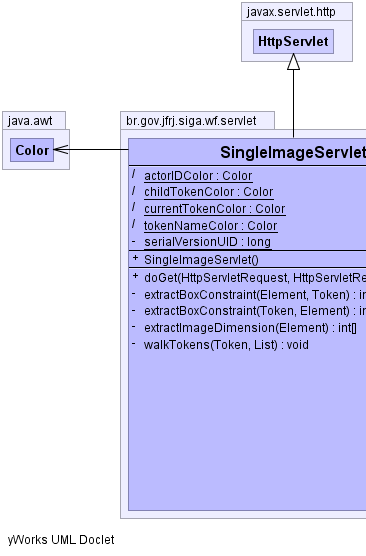

br.gov.jfrj.siga.wf.servlet
Class SingleImageServlet
java.lang.Object
 javax.servlet.GenericServlet
javax.servlet.http.HttpServlet
br.gov.jfrj.siga.wf.servlet.SingleImageServlet
javax.servlet.GenericServlet
javax.servlet.http.HttpServlet
br.gov.jfrj.siga.wf.servlet.SingleImageServlet
- All Implemented Interfaces:
- java.io.Serializable, javax.servlet.Servlet, javax.servlet.ServletConfig
public class SingleImageServlet
- extends javax.servlet.http.HttpServlet
Classe que gera uma imagem de exibição do process definition com marcações
nos tasks atuais.
- See Also:
- Serialized Form
-
-
|  |
 |
|
Method Summary |
void |
doGet(javax.servlet.http.HttpServletRequest request,
javax.servlet.http.HttpServletResponse response)
Pega o desenho do process definition e coloca no output stream. |
private int[] |
extractBoxConstraint(org.dom4j.Element root,
org.jbpm.graph.exe.Token token)
Extrai os limites da caixa para que seja desenhada a marcação à sua
volta. |
private int[] |
extractBoxConstraint(org.jbpm.graph.exe.Token currentToken,
org.dom4j.Element root)
Extrai os limites da caixa para que seja desenhada a marcação à sua
volta. |
private int[] |
extractImageDimension(org.dom4j.Element root)
Extrai as dimensões da imagem. |
private void |
walkTokens(org.jbpm.graph.exe.Token parent,
java.util.List allTokens)
Pega todos os tokens. |
| Methods inherited from class javax.servlet.http.HttpServlet |
doDelete, doHead, doOptions, doPost, doPut, doTrace, getLastModified, service, service |
| Methods inherited from class javax.servlet.GenericServlet |
destroy, getInitParameter, getInitParameterNames, getServletConfig, getServletContext, getServletInfo, getServletName, init, init, log, log |
| Methods inherited from class java.lang.Object |
clone, equals, finalize, getClass, hashCode, notify, notifyAll, toString, wait, wait, wait |
serialVersionUID
private static final long serialVersionUID
- See Also:
- Constant Field Values
currentTokenColor
static java.awt.Color currentTokenColor
childTokenColor
static java.awt.Color childTokenColor
tokenNameColor
static java.awt.Color tokenNameColor
actorIDColor
static java.awt.Color actorIDColor
SingleImageServlet
public SingleImageServlet()
extractBoxConstraint
private int[] extractBoxConstraint(org.jbpm.graph.exe.Token currentToken,
org.dom4j.Element root)
- Extrai os limites da caixa para que seja desenhada a marcação à sua
volta.
- Parameters:
root -
- Returns:
extractBoxConstraint
private int[] extractBoxConstraint(org.dom4j.Element root,
org.jbpm.graph.exe.Token token)
- Extrai os limites da caixa para que seja desenhada a marcação à sua
volta.
- Parameters:
root - token -
- Returns:
extractImageDimension
private int[] extractImageDimension(org.dom4j.Element root)
- Extrai as dimensões da imagem.
- Parameters:
root -
- Returns:
walkTokens
private void walkTokens(org.jbpm.graph.exe.Token parent,
java.util.List allTokens)
- Pega todos os tokens.
- Parameters:
parent - allTokens -
doGet
public void doGet(javax.servlet.http.HttpServletRequest request,
javax.servlet.http.HttpServletResponse response)
throws javax.servlet.ServletException,
java.io.IOException
- Pega o desenho do process definition e coloca no output stream.
- Overrides:
doGet in class javax.servlet.http.HttpServlet
- Throws:
javax.servlet.ServletException
java.io.IOException